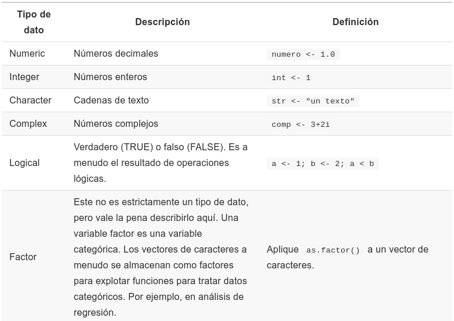

Programación en R.
Módulo 01 - Tipos de datos y estructuras de datos básicos.
Agenda del Curso
Módulo 1: Introducción a la programación en R.
- Ambiente de programación.
- Tipos de datos y estructuras de datos básicos.
- Control de flujo y funciones.
Módulo 2: Manejo de datos estructurados.
- Operaciones sobre dataframes.
- Joins y funciones estadísticas.
Módulo 3: Importar y exportar archivos de datos.
- Importar y exportar archivos de datos.
- Conexión a bases de datos SQL.
Módulo 4: Visualización de datos.
- Librería ggplot2 y elementos estéticos de gráficos.
Módulo 1: Tipos de datos y estructuras de datos básicos
Tipos de Datos.
R es capaz de manejar una variedad de tipos de datos que se almacenan en diferentes estructuras.

Operaciones Básicas
- Suma de dos números.
1 + 2
- Resta de dos números.
5 - 8
- Multiplicación de dos números.
2 * 5
- División de dos números.
4 / 2
Código: M1_C2_script01.R
- Asignar valor a una variable \(x\) e imprime el valor.
x <- 25
print(x)
- Multiplicamos un número por \(x\) y lo guardamos en \(y\).
y <- 2*x
print(y)
- ¿Qué tipo de dato es la variable \(x\) ?
class(x)
Vectores, Matrices, listas y Dataframes
Vectores, Matrices, listas y Dataframes

vectores una estructura unidimensional.matrizes una estructura bidimensional.listaes una colección de elementos que pueden ser de diferente tipo.Dataframeses una estructura de datos bidimensional similar a una matriz, con la diferencia que tipo de datos mixtos (numeric(),logic(),character(), etc).
Vectores
En R, existen diversas formas de construir un vector, entre ellas:
c()ó:vector()seq()rep()- Observación: Las funciones anteriores, aplica para cualquier tipo de dato.

- Los ejemplos de cada función, se encuentran en:
Código: M1_C2_script02.R
# Combinación
x <- c(1,2,3,4,5)
# Combinación mediante ":"
y <- 1:5
# Vector (numeric, integer, logical )
v <- vector("integer", 2)
# Secuencias
z <- seq(5,10)
# Secuencias de repeticiones
w <- rep(2, 10)
Matrices
- Una matriz es un arreglo bidimensional.
- Una forma de crear una matriz es generando un vector y
aplicar la función
matrix().
matrix(data = NA, nrow = 1, ncol = 1,
byrow = FALSE, dimnames = NULL)
- Tanto en
S-Pluscomo enR, la matriz se llena por columna. - Para llenar una matriz por filas, se usa el parametro
byrow=T. - Los ejemplos de cada función, se encuentran en:
Código: M1_C2_script03.R
# Matriz x de 2 filas y 5 columnas
x <- 1:10
matrix(x,nrow=2,ncol=5)
# Matriz desde las filas
matrix(x,2,5, byrow=T)
# Asigno a A la matriz creada
A <- matrix(x,2,5,byrow=T)
# ¿Qué clase es la matriz A?
A <- matrix(x,2,5,byrow=T)
# ¿Dimensión de A?
dim(A)
Matrices
Atributos
dim(x):Dimensión de la matriz.nrow(x):Número de filas de matriz.ncol(x):Número de columnas de matriz.length(x):Largo de la matriz (\(n\times p\)).mode(x):Formato del objeto.cbind(x):Concatena vectores columnas.rbind(x):Concatena vectores filas.- Los ejemplos de cada función, se encuentran en:
Código: M1_C2_script03.R
Operaciones Algébraicas
+,-,*,\,log(),exp(),sqrt(),...
Operaciones Matriciales
%*% :Multiplicación matricial.t(x) :Matriz traspuesta.solve(x):Matriz inversa.det(x) :Determinante de una matriz.
x <- matrix(1:10,2,5, byrow=T)
y <- matrix(c(1,0,0,2),2, byrow=T)
t(x)%*%y
solve(y)
det(y)
Listas
- Una lista, es una coleccion ordenada de cualquier objeto de
R. - Puede almacenar distintas estructuras de datos.
- La funcion que permite crear una lista es
list(). - ¿Qué se pueden hacer con las listas?:
- Crear, añadir, quitar, unir, comparar listas, convertir (a vector o dataframe), anidar listas, etc.
- Los ejemplos de cada función, se encuentran en:
Código: M1_C2_script04.R
# Tipos de Datos
x <- c(45, 12, 56, 14, 16)
y <- c("auto", "bicicleta")
z <- matrix(1:12, ncol = 4)
# Crea lista
mi_lista <- list(x, y, z)
mi_lista
# Accediendo a la lista
mi_lista[1]
mi_lista[2]
mi_lista[3]
# Número de elementos de la lista
length(mi_lista)
Dataframes
- Un dataframe, tiene un aspecto semejante a una matriz, con la diferencia que puede almacenar distintos tipos de datos.
- La función que permite crear dataframes es
data.frame(). - Los dataframes también heredan algunos atributos de las matrices
como
dim(),nrow(),ncol(),length(). - Aparecen otros atributos como
dimnames(),names()ocolnames(). - Los ejemplos de cada función, se encuentran en:
Código: M1_C2_script05.R
# Creando un dataframe
x1 <- c(100, 99,100,20)
x2 <- c(20,19,19,10)
x3 <- c("A","B","C","D")
data <- data.frame(x1,x2,x3)
print(data)
# Atributos de dataframe
dim(data)
nrow(data)
ncol(data)
length(data)
dimnames(data)
names(data)
colnames(data)